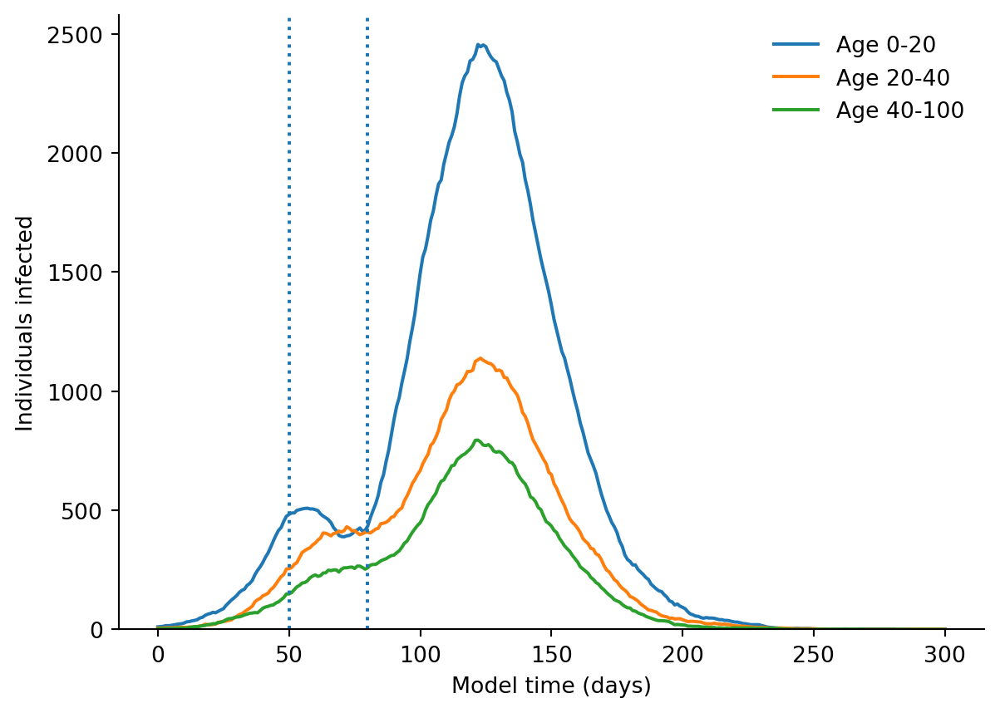

Although Starsim is primarily intended as an agent-based disease model, due to its modular structure, it can be used for other applications as well. This tutorial describes how Starsim can be used (1) as a compartmental disease model, and (2) as a general-purpose agent-based model.
Compartmental modeling
Much of Starsim’s power comes from how it handles agents. However, agent-based modeling may be too slow or too complex for some problems. While in many cases it probably makes more sense to do compartmental disease modeling in another framework (such as Atomica), it is also possible to do it within Starsim, taking advantage of features such as demographics, time units, etc. This is especially useful for a multi-disease simulation where some diseases need the detail and flexibility of an ABM, while others can be modeled more simply (and faster) as compartmental models.
Setting up the model
Here we will define a simple compartmental susceptible-infectious-susceptible (SIS) model. The model definition here is quite similar to the agent-based implementation in Starsim’s SIR module; differences are noted in comments. Note that the model runs extremely fast, since a three-state compartmental model (susceptible, infecious, and immunity) runs as fast as an agent-based model with three agents!
"""Example compartmental SIS model for Starsim"""import starsim as ssimport sciris as scimport matplotlib.pyplot as pltclass CompSIS(ss.Module): # We don't need the extra functionality of the Infection class, so just inherit from Moduledef__init__(self, **kwargs):super().__init__()self.define_pars( beta = ss.peryear(0.8), # Leverage Starsim's automatic time unit handling init_prev =0.01, # NB: this is a scalar, rather than a distribution for an ABM recovery = ss.peryear(0.1), # Also not a distribution waning = ss.peryear(0.05), imm_boost =1.0, )self.update_pars(**kwargs)# Don't need to define states; just use scalarsself.N =0self.S =0self.I =0self.immunity =0returndef init_post(self):""" Finish initialization """super().init_post()self.N =len(self.sim.people) # Assumes a static population; could also use a dynamic population size i0 =self.pars.init_prevself.S =self.N*(1-i0)self.I =self.N*i0self.immunity = i0return@propertydef rel_sus(self):return1-self.immunitydef step(self):""" Carry out disease transmission logic """self.immunity *= (1-self.pars.waning.to_prob()) # Update immunity from waning infected = (self.S*self.I/self.N)*(self.pars.beta.to_prob())*self.rel_sus # Replaces Infection.infect() recovered =self.I*self.pars.recovery.to_prob() # Replaces setting a time to recovery and checking that time net = infected - recovered # Net change in number infectiousself.S -= netself.I += netself.immunity += infected/self.N*self.pars.imm_boost # Update immunity from new infectionsreturndef init_results(self):""" Initialize results """super().init_results()self.define_results( ss.Result('S', label='Susceptible'), ss.Result('I', label='Infectious'), )returndef update_results(self):""" Store the current state """super().update_results()self.results['S'][self.ti] =self.Sself.results['I'][self.ti] =self.Ireturndef plot(self):""" Default plot for SIS model """ fig = plt.figure() res =self.results kw =dict(lw=2, alpha=0.7)for rkey in ['S', 'I']: plt.plot(res.timevec, res[rkey], label=res[rkey].label, **kw) plt.legend(frameon=False) plt.xlabel('Time') plt.ylabel('Number of people') plt.ylim(bottom=0) sc.boxoff() sc.commaticks() plt.show() return fig# Run the compartmental simulation (csim)csim = ss.Sim(diseases=CompSIS(), dur=100, dt=0.1, verbose=0.01)csim.run()# Plot the resultscsim.diseases.compsis.plot();
Let’s compare to our standard agent-based SIS model with similar parameters:
import starsim as ss# Run the modelabm = ss.Sim(diseases=ss.SIS(beta=0.03), networks='random', dur=100, dt=0.1, verbose=0.01)abm.run()# Plot the resultsabm.diseases.sis.plot()
The results are broadly similar, although there are differences due to the network transmission, duration of infection, etc. Note that the compartmental version runs 20 times faster than the agent-based version. Does this mean that compartmental models are better than agent-based models? If all you want to simulate is a simple SIS model, then … the answer is probably yes!
Epiverse Epidemics: School closure model
This example adapts the example from the Epidemics v0.4.0 R package:
Note that it does not use the same level of detail as the original in terms of the population or contact matrices, but produces similar results.
import numpy as npimport pandas as pdimport sciris as scimport starsim as ssimport matplotlib.pyplot as plt# Interventionclass close_schools(ss.Intervention):""" Approximate closing schools by reducing susceptibility and transmissibility of children """def__init__(self, start=50, stop=80, reduction=0.5):super().__init__()self.start = startself.stop = stopself.reduction = reductionreturndef step(self): disease =self.sim.diseases[0] children =self.sim.people.age <20ifself.now ==self.start: disease.rel_sus[children] *=1-self.reduction disease.rel_trans[children] *=1-self.reductionelifself.now ==self.stop: disease.rel_sus[children] =1.0 disease.rel_trans[children] =1.0return# Analyzerclass infections_by_age(ss.Analyzer):""" Count infections by age """def__init__(self, age_bins=(0, 20, 40, 100)):super().__init__()self.age_bins = age_binsself.mins = age_bins[:-1]self.maxes = age_bins[1:]self.hist = {k:[] for k inself.mins}returndef init_pre(self, sim):super().init_pre(sim)self.infections = np.zeros(len(self.sim.people.age))returndef step(self): age =self.sim.people.age disease =self.sim.diseases[0]formin, maxinzip(self.mins, self.maxes): mask = (age >=min) & (age <max)self.hist[min].append(disease.infected[mask].sum())returndef plot(self): plt.figure() x =self.sim.t.tvecformin, maxinzip(self.mins, self.maxes): plt.plot(x, self.hist[min], label=f'Age {min}-{max}') intv =self.sim.interventions[0]for day in [intv.start, intv.stop]: plt.axvline(day, linestyle=':') plt.legend(frameon=False) plt.xlabel('Model time (days)') plt.ylabel('Individuals infected') plt.ylim(bottom=0) sc.boxoff() plt.show()return# Run the modelsim = ss.Sim( people = ss.People(n_agents=20e3, age_data=pd.read_csv('test_data/nigeria_age.csv')), diseases =dict(type='sir', init_prev =0.001, beta = ss.perday(1/100), dur_inf = ss.days(20.0), ), networks ='random', interventions = close_schools(), analyzers = infections_by_age(), start = ss.days(0), dur = ss.days(300), dt = ss.days(1.0), verbose =False,)sim.run()sim.analyzers.infections_by_age.plot()

While the Starsim version is longer than the Epidemics version, note that Epidemics has built-in contacts interventions and automatically reports infections by age. These have to be manually added to Starsim, but in turn Starsim provides much more control.
Mesa: Wealth model
This example illustrates a simple “weath model”, in which each agent starts with a single unit of wealth, and on each timestep, every agent with more than zero wealth gives one unit of wealth to another agent.
This tutorial is adapted from the following example:
We could define the wealth model as any type of module, since they all can store states and update them. Here we will define wealth as a subclass of ss.Intervention (though it could equally well be a subclass of ss.Demographics or even ss.Disease, if you are so inclined). All we need to do is update the wealth state (which we can store inside the “intervention”), and we can also use this class to track the wealth distribution over time and plot it. The full model looks like this:
"""Define the classic agent-based "wealth model" in Starsim"""# Importsimport numpy as npimport starsim as ssimport matplotlib.pyplot as plt# Define the modelclass WealthModel(ss.Module):""" A simple wealth transfer model"""def init_post(self, bins=10):""" Define custom model attributes """super().init_post()self.npts =len(self.sim) # Number of timepointsself.n_agents =len(sim.people) # Number of agentsself.wealth = np.ones(self.n_agents) # Initial wealth of each agentself.bins = np.arange(bins+1) # Bins used for plottingself.wealth_dist = np.zeros((self.npts, len(self.bins)-1)) # Wealth distribution over timereturndef step(self):""" Transfer wealth between agents -- core model logic """self.wealth_hist() # Store the wealth at this time point givers =self.wealth >0# People need wealth to be givers receivers = np.random.choice(self.sim.people.uid, size=givers.sum()) # Anyone can be a receiverself.wealth[givers] -=1# Givers are unique, so can use vectorized versionfor receive in receivers: # Vectorized version is: np.add.at(sim.people.wealth.raw, receivers, 1)self.wealth[receive] +=1returndef wealth_hist(self):""" Calculate the wealth histogram """ ti =self.sim.ti # Current timestepself.wealth_dist[ti,:], _ = np.histogram(self.wealth, bins=self.bins)returndef plot(self):""" Plot a 2D histogram of the final wealth distribution """ plt.figure() plt.bar(self.bins[:-1], self.wealth_dist[-1,:]) plt.title('Wealth distribution at final time point') plt.xlabel('Wealth') plt.ylabel('Number of agents') plt.show()returndef plot3d(self):""" Plot a 3D heatmap of the wealth distribution over time """ plt.figure() plt.pcolor(self.wealth_dist.T, cmap='turbo') plt.title('Wealth distribution over time') plt.xlabel('Time') plt.ylabel('Wealth') plt.colorbar().set_label('Number of agents', rotation=270) plt.show()return# Create sim inputs, including the wealth modelwealth = WealthModel()pars =dict( n_agents =100, # Number of agents start =0, stop =100, demographics = wealth,)# Run the modelsim = ss.Sim(pars, copy_inputs=False) # copy_inputs=False lets us reuse the "wealth" object from abovesim.run()# Plot the resultswealth.plot()wealth.plot3d()